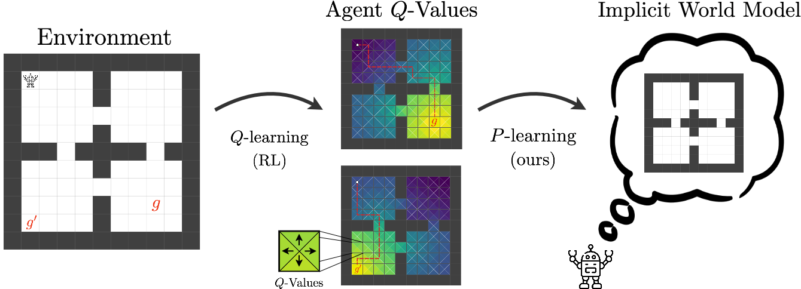
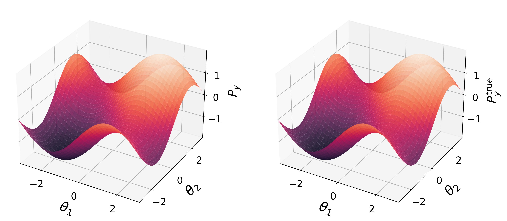
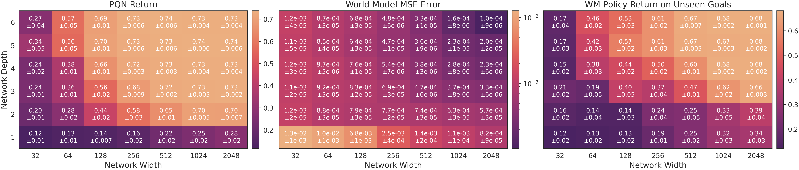
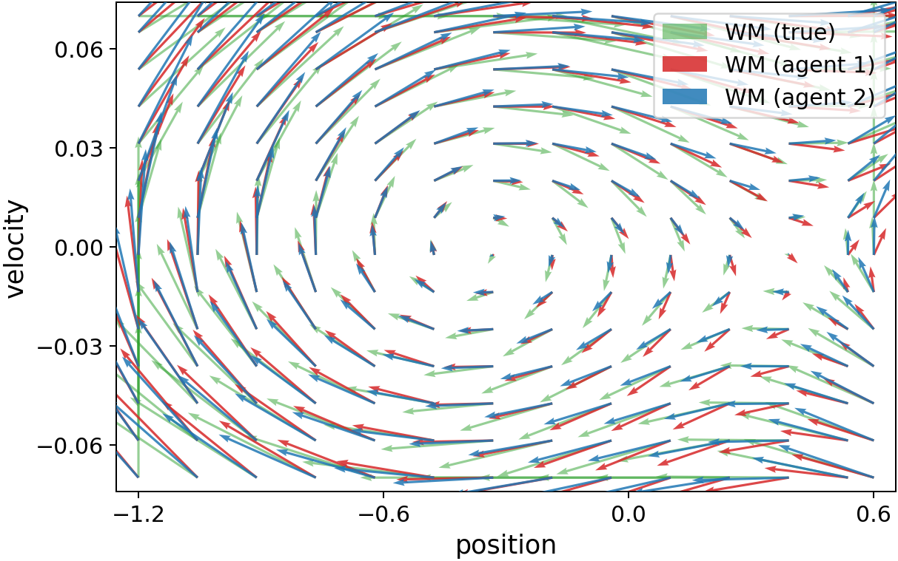
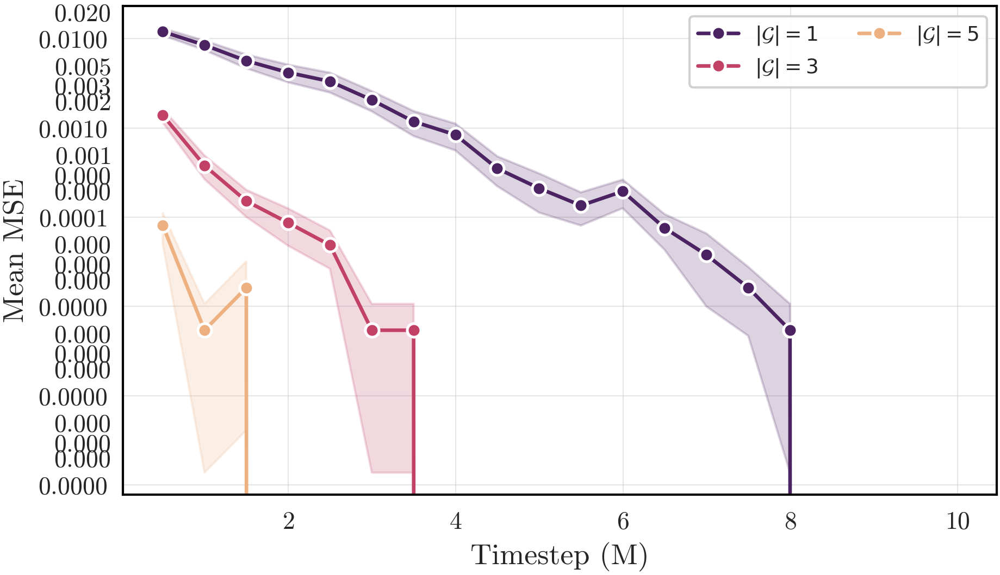
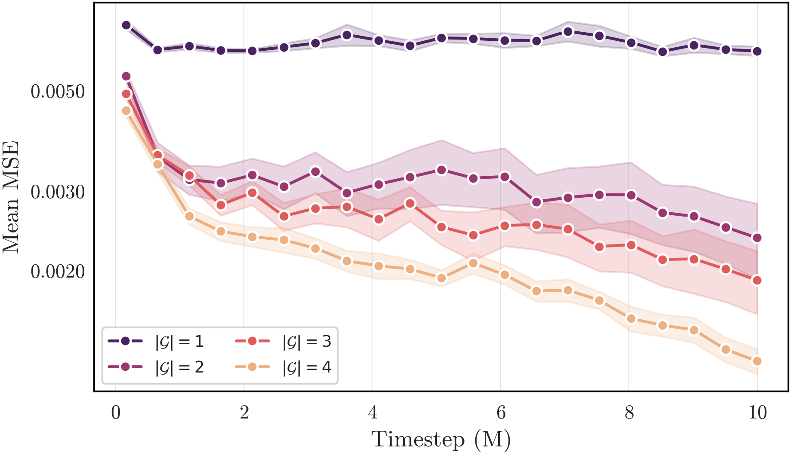
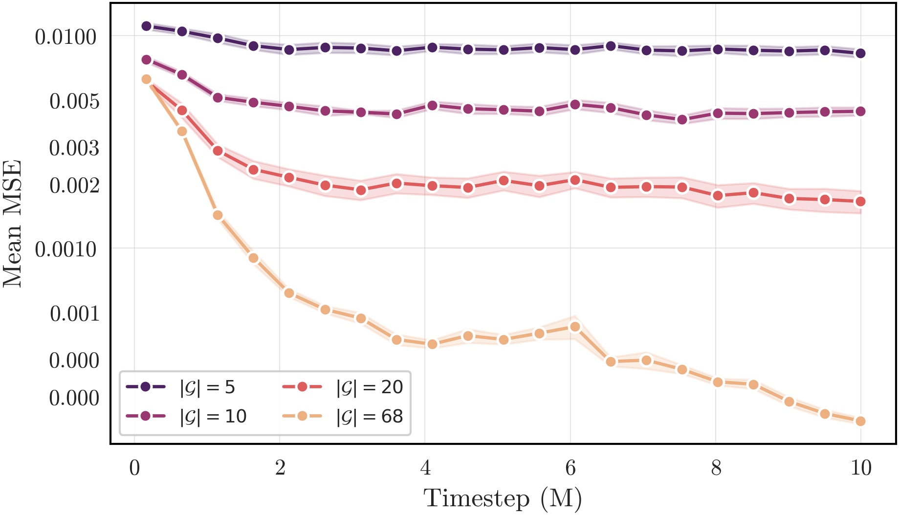

Inverting the Bellman Equation:
From Q-Values to World Models
- Alistair Letcher\(^{\alpha}\)
- Mattie Fellows\(^{\alpha}\)
- Alexander Goldie\(^{\alpha}\)
- Jonathan Richens\(^{\beta}\)
- Jakob Foerster\(^{\alpha}\)
- Oliver Richardson\(^{\gamma}\)
\(^{\alpha}\) FLAIR, University of Oxford \(^{\beta}\) Independent \(^{\gamma}\) Mila, Université de Montréal

TL;DR: We prove that goal-conditioned agents trained on a sufficiently rich set of rewards implicitly encode a unique, accurate world model — and introduce P-learning, an algorithm that extracts it from their Q-values by inverting the Bellman equation. The extracted world model unlocks zero-shot planning for goals far beyond the training distribution, even on variables the agent never directly optimised for.
Abstract
Model-based and model-free reinforcement learning are traditionally viewed as separate paradigms: while the former learns an explicit model of the transition dynamics \(P\), model-free agents typically estimate value functions tied to a specific policy and reward. In this paper, we challenge this dichotomy by proving that value-based agents trained on a sufficiently rich set of reward functions, e.g. using goal-conditioned RL, implicitly encode a unique and accurate world model. To extract this model in practice, we introduce P-learning; analogous to Q-learning, which approximates \(Q^\star\) using samples from the environment, P-learning extracts an agent's model of the environment \(P^\star\) by sampling from its Q-values, policies, and rewards, effectively inverting the Bellman equation. In deterministic MDPs, we prove that the true kernel \(P\) can be recovered from an agent trained on a single generic goal for finite state spaces \(\mathcal{S}\), and a finite number of Gaussian goals for continuous \(\mathcal{S} \subseteq \mathbb{R}^d\), provided Q-values are accurate. In the stochastic setting, these conditions generalise to larger sets of goals depending on the reward function family. Even when our assumptions are violated, we empirically demonstrate that agents trained with a small number of sparse rewards encode accurate dynamics in (i) stochastic variants of FourRooms, (ii) MountainCar, and (iii) Reacher. This is further validated by training policies inside the extracted world model, for goals far beyond the training distribution, suggesting that goal-conditioned agents secretly contain implicit generalisation capabilities and providing a new lens into the connection between model-based, model-free, and goal-conditioned RL.
Overview
Model-free RL has powered many of the field's recent successes — but the policies and value functions it learns are entangled with a specific reward, making it hard to ask what an agent understands about the world (as opposed to what it values). Formally, distinct transition kernels can yield identical value functions, the well-known value equivalence problem. So we ask:
When do value-based agents encode an accurate model of their environment?
Our answer: agents trained on a sufficiently rich set of goals — e.g. via goal-conditioned RL, successor features, or forward-backward learning — implicitly learn a unique world model, which we can extract by inverting the Bellman equation. Concretely, the paper makes three contributions:
- Methodologically, we introduce P-learning, an inverse analogue to Q-learning. Instead of iteratively updating value estimates for a fixed environment, P-learning updates a candidate world model to be consistent with fixed value functions, converging to a world model that explains the Q-values.
- Theoretically, we prove conditions under which value equivalence is broken and P-learning recovers the true transition kernel exactly. In deterministic MDPs, a single generic goal suffices for finite \(\mathcal{S}\), and a finite number of Gaussian goals for continuous \(\mathcal{S}\subseteq \mathbb{R}^d\). In stochastic MDPs, \(|\mathcal{G}|\geq |\mathcal{S}|\) goals (finite) or any goal set with non-empty interior (continuous) suffice, with tight \(\Theta(\varepsilon)\) error bounds for \(\varepsilon\)-approximate Q-values.
- Empirically, we recover accurate world models from agents trained with surprisingly few goals on stochastic variants of
FourRooms,MountainCar, and MuJoCoReacher. The extracted model supports zero-shot planning for goals far outside the training distribution, even on variables the reward never directly depended on — providing a new lens on the link between model-based, model-free, and goal-conditioned RL.
What is P-Learning?
The starting point is a simple symmetry. The Bellman equation for a goal-conditioned policy \(\pi\) reads
\[ \mathcal{T}^\pi_{P}(Q)(s, a, g) = \mathbb{E}_{s' \sim P(s,a),\,a'\sim\pi(s',g)}\bigl[\,r(s', g) + \gamma\, Q(s', a', g)\,\bigr] \,. \]
Q-learning takes the environment \(P\) as fixed and searches for a value function \(Q\) that satisfies \(\mathcal{T}^\pi_P(Q) = Q\). P-learning flips this: it takes a goal-conditioned Q-function (and policy and reward) as fixed, and searches for a transition kernel \(P_\phi\) that satisfies the same equation. We minimise the Bellman residual with respect to \(\phi\):
\[ \mathcal{L}(\phi) \;=\; \bigl\| \mathcal{T}^\pi_\phi(Q) - Q \bigr\|_d^2 \,. \]
Unlike Q-learning, P-learning is gradient descent on a stationary objective, so it inherits the standard convergence guarantees of SGD. In the tabular case, we can write the update in closed form. Stacking next-state values \(M_{lk} = r(s'_k, g_l) + \gamma V(s'_k, g_l)\) into a matrix \(M\), the Bellman equation becomes a linear system \(M\,P_\phi(s,a) = Q(s,a)\), and P-learning converges to
\[ P_\infty(s,a) \;=\; M^{+}\, Q(s,a) \;+\; \bigl(I - M^{+}M\bigr)\, P_0(s,a)\,, \]
where \(M^{+}\) is the Moore–Penrose pseudo-inverse. When \(M\) has full rank, the second term vanishes and \(M^{+}\) acts as an inverse Bellman map from values back to dynamics — the analogue, for P-iteration, of the contraction underlying classical Q-iteration. If the Q-values are exact for the true kernel, P-learning recovers exactly that kernel.
For continuous state spaces, we parameterise \(P_\phi\) as a neural network and train it by gradient descent on \(\mathcal{L}(\phi)\), using the reparameterisation trick for stochastic dynamics or a deterministic successor function in the deterministic case. The full algorithm is in the paper.
Theory: When are values informationally equivalent to dynamics?
The classical obstacle to recovering \(P\) from values is value equivalence: many kernels give the same \(Q^\pi\) for a fixed reward. Our theorems pin down exactly when multiple goals break this degeneracy.
- Deterministic, finite \(\mathcal{S}\): a single generic goal suffices to recover \(P\) exactly — with no assumptions on policy optimality.
- Deterministic, continuous \(\mathcal{S}\subseteq\mathbb{R}^d\): a finite set of Gaussian goals suffices.
- Stochastic, finite \(\mathcal{S}\): \(|\mathcal{G}| \geq |\mathcal{S}|\) generic goals suffice for exact recovery, with tight \(\Theta(\varepsilon)\) error bounds when Q-values are \(\varepsilon\)-approximate.
- Stochastic, continuous \(\mathcal{S}\subseteq\mathbb{R}^d\): any goal set with non-empty interior suffices (for unconditional policies).
Taken together: once the goal set is rich enough, the collection \((Q_g, \pi_g, r_g)_{g\in\mathcal{G}}\) is informationally equivalent to the transition kernel \(P\) itself. Model-free, when extended to a family of rewards, recovers all the structural content of model-based.
Experiment: Reacher — planning beyond the training distribution
We train a goal-conditioned PQN agent on MuJoCo Reacher with only \(|\mathcal{G}|=4\) sparse, position-based goals at the cardinal directions, and extract its implicit world model with P-learning. Despite imperfect Q-values (MSE \(=4.2\cdot10^{-2}\)), the recovered model matches ground-truth dynamics with high fidelity (MSE \(=1.0\cdot10^{-4}\)).

Left two panels: world-model prediction of next-state fingertip y-position vs ground truth, for a fixed action. Right two panels: WM vs ground-truth trajectory rollouts under the trained policy.
To test whether the model captures more than what the reward saw, we plan inside it for three out-of-distribution goals — including goals on joint angles and velocities, dimensions the agent never directly optimised for. Policies derived purely from the extracted world model are quasi-optimal on all three, despite position-only training:
| Unseen goal | Optimal \(R_\gamma^\star\) | WM-trained \(R_\gamma^{\text{WM}}\) |
|---|---|---|
| Far fingertip \((\sqrt{2},\sqrt{2})\) | 0.71 ± 0.07 | 0.70 ± 0.07 |
| Target joint angle | 0.68 ± 0.06 | 0.67 ± 0.07 |
| Target velocity | 0.65 ± 0.06 | 0.65 ± 0.06 |
Crucially, the angle- and velocity-based goals could not have been solved with position-based successor features — their optimal Q-functions are not linear combinations of training Q-functions. The agent's value function genuinely encodes the geometry of the environment.
We also test whether better agents have better implicit world models, by sweeping the Q-network architecture. The Spearman correlation between agent return and WM error is \(\rho = -0.98\) (95% CI \([-0.99, -0.94]\)), and between agent return and WM-policy return on unseen goals is \(\rho = +0.92\) — suggesting that performance and implicit generalisation are tightly coupled.

Agent return (left), WM error vs ground truth (middle), and WM-policy return on unseen goals (right), as a function of Q-network depth and width. More capacity \(\Rightarrow\) better agent and better implicit world model.
Experiment: MountainCar — agents with orthogonal goals secretly agree
We train one MountainCar agent on five position-based goals and another on five velocity-based goals — orthogonal reward families. The implicit world models extracted from each are nearly identical, and ~15× closer to each other than either is to ground truth:

Quiver plots of world models extracted from two agents trained with orthogonal goal families. Arrows show predicted next state from each root state for action \(a = \text{right}\). The two agents have very different objectives, yet learn nearly the same dynamics.
This suggests an informal local-to-global hypothesis: value-based agents trained on a small number of local reward functions (each defined on a subset of variables) tend to encode an accurate model over all dependent environment variables.
Experiment: FourRooms — how many goals does stochasticity cost?
On three increasingly stochastic variants of the classic FourRooms gridworld, we directly validate the finite-MDP theory: very few goals suffice for quasi-perfect recovery, with the goal budget growing gracefully with stochasticity.

Deterministic — \(|\mathcal{G}| = 1\) suffices.

Windy — \(|\mathcal{G}| = 4\) suffices.

Teleporting — \(|\mathcal{G}| = 20\) suffices.
In each case, the world model converges to the true transition kernel as more goals are added — with sample efficiency well beyond what our worst-case theory guarantees.
Takeaways
- Goal-conditioned value functions are not just policy summaries — they carry, in extractable form, a model of the world.
- P-learning provides a concrete algorithm for inverting the Bellman equation: \((Q, \pi, r) \mapsto P\).
- The recovered model unlocks zero-shot planning for OOD goals, including on variables the reward never depended on — an "implicit generalisation" capability hidden inside ordinary model-free agents.
- This bridges model-based, model-free, and goal-conditioned RL: with a rich enough goal set, the three paradigms become informationally equivalent.
We hope this perspective opens up new directions for hybrid algorithms, interpretability tools, and auditing methods built on the world models implicit in trained agents.
Citation
The website template was borrowed from Easy Academic Website Template and Jon Barron.